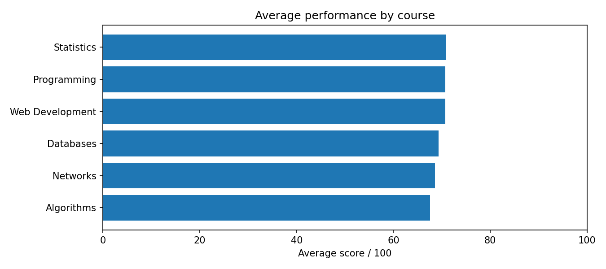
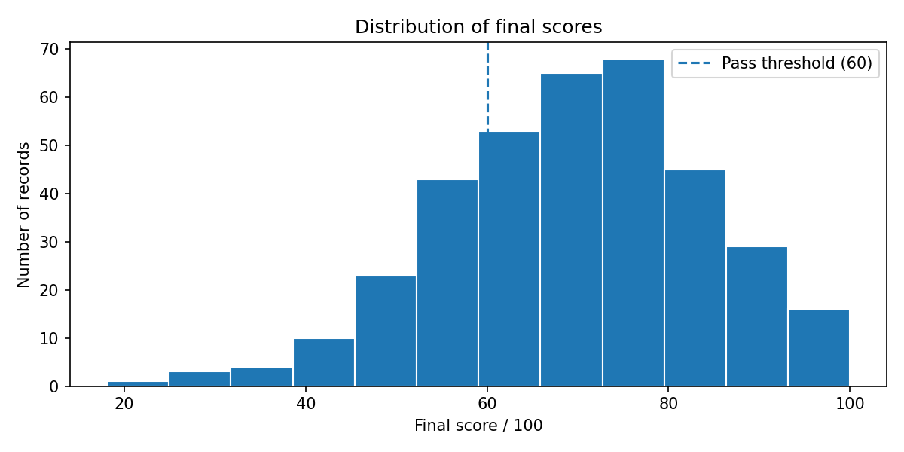
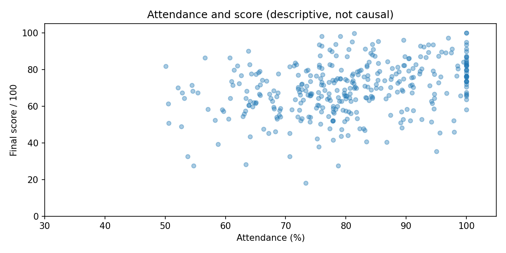
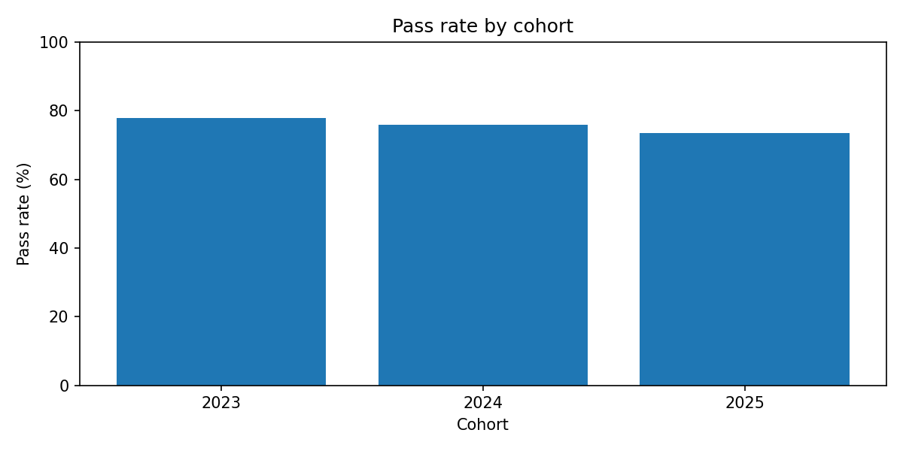

Records
360
Synthetic examples
Courses
6
Distinct course names
Mean score
69.6
Out of 100
Pass rate
75.6%
Threshold: 60




Course summary
| Course | Records | Mean score | Pass rate |
|---|---|---|---|
| Statistics | 55 | 70.8 | 78.2% |
| Programming | 48 | 70.8 | 77.1% |
| Web Development | 71 | 70.7 | 81.7% |
| Databases | 61 | 69.3 | 72.1% |
| Networks | 64 | 68.6 | 71.9% |
| Algorithms | 61 | 67.6 | 72.1% |